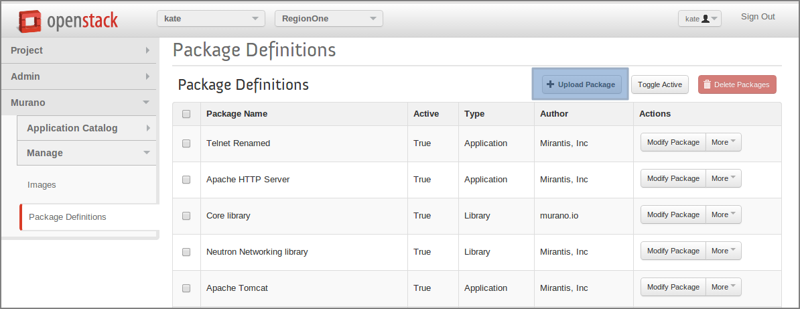
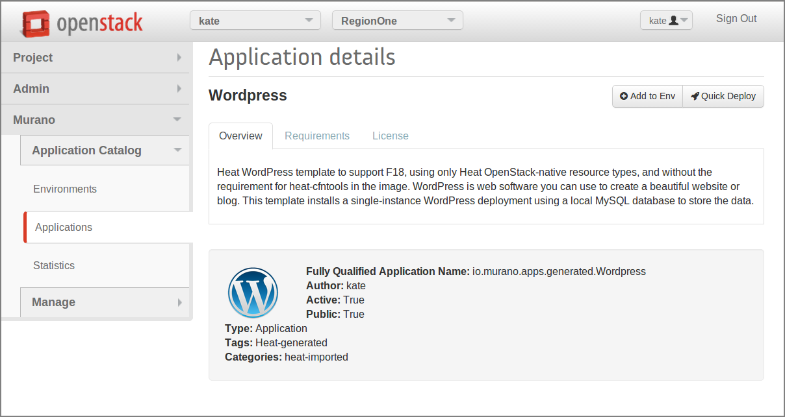

Murano is an Application catalog which intends to support applications, defined in different formats. As a first step to universality, heat orchestration template support was added. It means that any heat template could be added as a separate application into the Application Catalog. This could be done in two ways: manual and automatic.
Before uploading an application into the catalog, it should be prepared and archived. Murano command line will do all preparation for you. Just choose the desired Heat Orchestration Template and perform the following command:
murano package-create --template wordpress/template.yaml
Note, that optional parameters could be specified:
| –name: | Application name, copied from template by default |
|---|---|
| –logo: | Application square logo, by default heat logo will be used |
| –description: | Text information about an application, by default copied from template |
| –author: | Name of application author, by default is set to |
| –output: | Name of the output file archive to save locally |
| –full-name: | Fully qualified domain name - domain name that specifies exact application location |
Note
To performing this command python-muranoclient should be installed in the system
As the result, application definition archive will be ready for an uploading.
Application package could be composed manually. Follow the 5 steps below.
Step 1. Choose the desired heat orchestration template
Step 2. Rename it to template.yaml
Step 3. Prepare application logo (optional step)
It could be any picture associated with the application.
Step 4. Create manifest.yaml file
All service information about the application is contained here. Specify the following parameters:
Format: Defines application definition format; should be set to Heat.HOT/1.0 Type: Defines manifest type, should be set to Application FullName: Unique name which will be used to identify the application in Murano Catalog Description: Text information about an application Author: Name of application author or company Tags: Keywords, associated with the application Logo: Name of the application logo file
Take a look at the example:
Format: Heat.HOT/1.0 Type: Application FullName: io.murano.apps.linux.Wordpress Name: Wordpress Description: | WordPress is web software you can use to create a beautiful website or blog. This template installs a single-instance WordPress deployment using a local MySQL database to store the data. Author: 'Openstack, Inc' Tags: [Linux, connection] Logo: logo.png
After application package is ready, it can be uploaded to the catalog in two ways:
Using murano CLI
During uploading, it’s required to provide category, that application belongs to. To browse all available categories preform:
murano category-list
Specify any suitable category and path to the application archive.
murano package-import --category=Web wordpress.zip
Using Murano Dashboard
Package uploading is available for admin users at Murano -> Manage -> Packages page.
After that, application is available in the Catalog and could be selected for a deployment.
